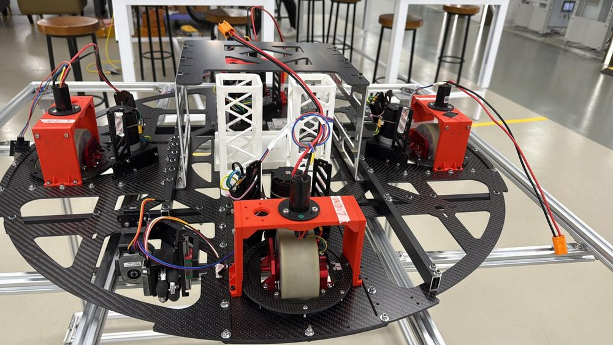

Competition · 2026–27
Robocon 2027
Our main competition team for 2026–27. The team will enter the Robocon Hong Kong contest, the route to ABU Robocon 2027 in Solo, Indonesia, on the theme “The Pursuit of Mustika Nusantara”. Two robots per team must handle game objects, build towers and work together under match time.
Mechanisms · embedded control · autonomous navigation · vision · match strategy